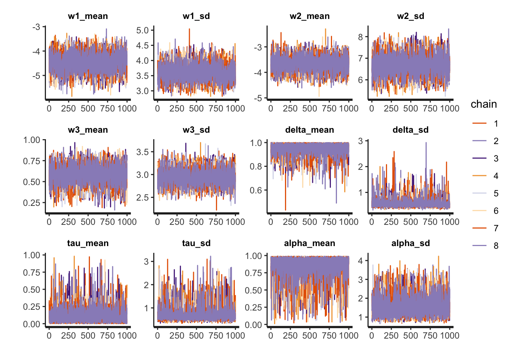
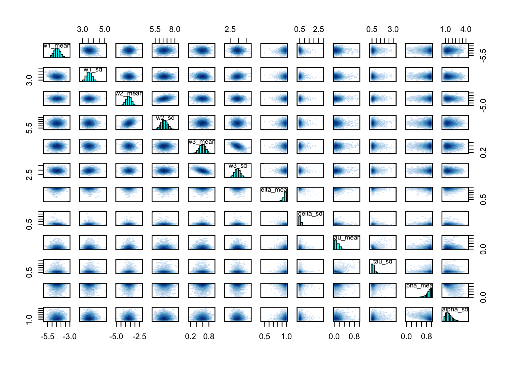
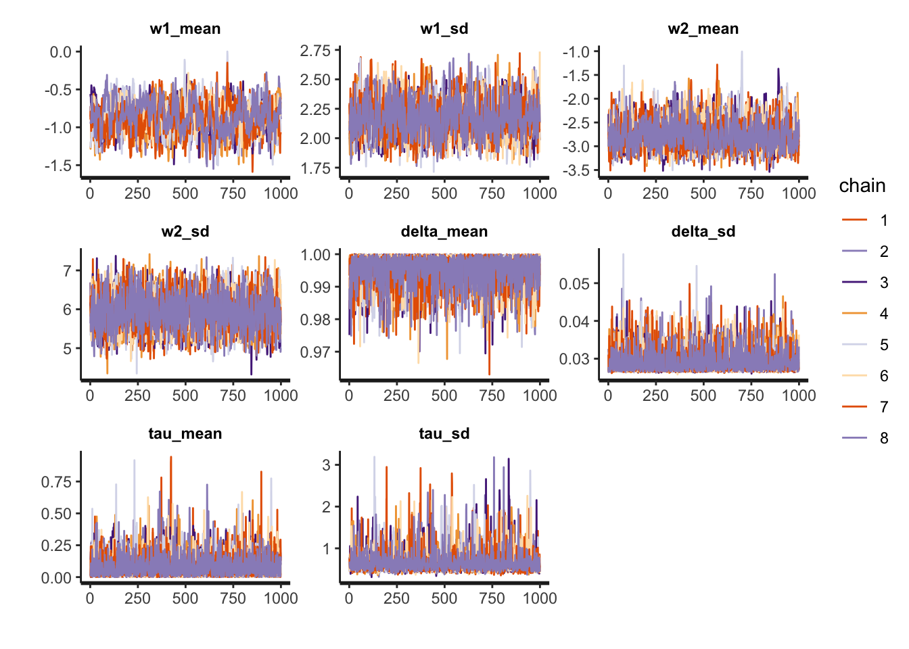

Last updated: 2018-10-03
workflowr checks: (Click a bullet for more information)
-
✔ R Markdown file: up-to-date
Great! Since the R Markdown file has been committed to the Git repository, you know the exact version of the code that produced these results.
-
✔ Environment: empty
Great job! The global environment was empty. Objects defined in the global environment can affect the analysis in your R Markdown file in unknown ways. For reproduciblity it’s best to always run the code in an empty environment.
-
✔ Seed: set.seed(20180715)
The command set.seed(20180715) was run prior to running the code in the R Markdown file. Setting a seed ensures that any results that rely on randomness, e.g. subsampling or permutations, are reproducible.
-
✔ Session information: recorded
Great job! Recording the operating system, R version, and package versions is critical for reproducibility.
-
✔ Repository version: 7883b94
Great! You are using Git for version control. Tracking code development and connecting the code version to the results is critical for reproducibility. The version displayed above was the version of the Git repository at the time these results were generated.
Note that you need to be careful to ensure that all relevant files for the analysis have been committed to Git prior to generating the results (you can use wflow_publish or wflow_git_commit). workflowr only checks the R Markdown file, but you know if there are other scripts or data files that it depends on. Below is the status of the Git repository when the results were generated:
Ignored files:
Ignored: .DS_Store
Ignored: .Rhistory
Ignored: .Rproj.user/
Ignored: data/.DS_Store
Ignored: docs/.DS_Store
Ignored: docs/figure/.DS_Store
Ignored: model/.DS_Store
Untracked files:
Untracked: data/derived/av_opt_hier_space_fit.RData
Unstaged changes:
Modified: analysis/gradients/subject1.pdf
Modified: analysis/gradients/subject10.pdf
Modified: analysis/gradients/subject100.pdf
Modified: analysis/gradients/subject101.pdf
Modified: analysis/gradients/subject102.pdf
Modified: analysis/gradients/subject103.pdf
Modified: analysis/gradients/subject104.pdf
Modified: analysis/gradients/subject105.pdf
Modified: analysis/gradients/subject106.pdf
Modified: analysis/gradients/subject107.pdf
Modified: analysis/gradients/subject108.pdf
Modified: analysis/gradients/subject109.pdf
Modified: analysis/gradients/subject11.pdf
Modified: analysis/gradients/subject110.pdf
Modified: analysis/gradients/subject111.pdf
Modified: analysis/gradients/subject112.pdf
Modified: analysis/gradients/subject113.pdf
Modified: analysis/gradients/subject114.pdf
Modified: analysis/gradients/subject115.pdf
Modified: analysis/gradients/subject116.pdf
Modified: analysis/gradients/subject117.pdf
Modified: analysis/gradients/subject118.pdf
Modified: analysis/gradients/subject119.pdf
Modified: analysis/gradients/subject12.pdf
Modified: analysis/gradients/subject120.pdf
Modified: analysis/gradients/subject121.pdf
Modified: analysis/gradients/subject122.pdf
Modified: analysis/gradients/subject123.pdf
Modified: analysis/gradients/subject124.pdf
Modified: analysis/gradients/subject125.pdf
Modified: analysis/gradients/subject126.pdf
Modified: analysis/gradients/subject127.pdf
Modified: analysis/gradients/subject128.pdf
Modified: analysis/gradients/subject129.pdf
Modified: analysis/gradients/subject13.pdf
Modified: analysis/gradients/subject130.pdf
Modified: analysis/gradients/subject131.pdf
Modified: analysis/gradients/subject132.pdf
Modified: analysis/gradients/subject133.pdf
Modified: analysis/gradients/subject134.pdf
Modified: analysis/gradients/subject135.pdf
Modified: analysis/gradients/subject136.pdf
Modified: analysis/gradients/subject137.pdf
Modified: analysis/gradients/subject138.pdf
Modified: analysis/gradients/subject139.pdf
Modified: analysis/gradients/subject14.pdf
Modified: analysis/gradients/subject140.pdf
Modified: analysis/gradients/subject141.pdf
Modified: analysis/gradients/subject142.pdf
Modified: analysis/gradients/subject143.pdf
Modified: analysis/gradients/subject144.pdf
Modified: analysis/gradients/subject145.pdf
Modified: analysis/gradients/subject146.pdf
Modified: analysis/gradients/subject147.pdf
Modified: analysis/gradients/subject148.pdf
Modified: analysis/gradients/subject149.pdf
Modified: analysis/gradients/subject15.pdf
Modified: analysis/gradients/subject150.pdf
Modified: analysis/gradients/subject151.pdf
Modified: analysis/gradients/subject152.pdf
Modified: analysis/gradients/subject153.pdf
Modified: analysis/gradients/subject154.pdf
Modified: analysis/gradients/subject155.pdf
Modified: analysis/gradients/subject156.pdf
Modified: analysis/gradients/subject157.pdf
Modified: analysis/gradients/subject158.pdf
Modified: analysis/gradients/subject159.pdf
Modified: analysis/gradients/subject16.pdf
Modified: analysis/gradients/subject160.pdf
Modified: analysis/gradients/subject161.pdf
Modified: analysis/gradients/subject162.pdf
Modified: analysis/gradients/subject163.pdf
Modified: analysis/gradients/subject164.pdf
Modified: analysis/gradients/subject165.pdf
Modified: analysis/gradients/subject166.pdf
Modified: analysis/gradients/subject167.pdf
Modified: analysis/gradients/subject168.pdf
Modified: analysis/gradients/subject169.pdf
Modified: analysis/gradients/subject17.pdf
Modified: analysis/gradients/subject170.pdf
Modified: analysis/gradients/subject171.pdf
Modified: analysis/gradients/subject172.pdf
Modified: analysis/gradients/subject173.pdf
Modified: analysis/gradients/subject174.pdf
Modified: analysis/gradients/subject175.pdf
Modified: analysis/gradients/subject176.pdf
Modified: analysis/gradients/subject177.pdf
Modified: analysis/gradients/subject178.pdf
Modified: analysis/gradients/subject179.pdf
Modified: analysis/gradients/subject18.pdf
Modified: analysis/gradients/subject180.pdf
Modified: analysis/gradients/subject181.pdf
Modified: analysis/gradients/subject182.pdf
Modified: analysis/gradients/subject183.pdf
Modified: analysis/gradients/subject184.pdf
Modified: analysis/gradients/subject185.pdf
Modified: analysis/gradients/subject186.pdf
Modified: analysis/gradients/subject187.pdf
Modified: analysis/gradients/subject188.pdf
Modified: analysis/gradients/subject189.pdf
Modified: analysis/gradients/subject19.pdf
Modified: analysis/gradients/subject190.pdf
Modified: analysis/gradients/subject191.pdf
Modified: analysis/gradients/subject192.pdf
Modified: analysis/gradients/subject193.pdf
Modified: analysis/gradients/subject194.pdf
Modified: analysis/gradients/subject195.pdf
Modified: analysis/gradients/subject196.pdf
Modified: analysis/gradients/subject197.pdf
Modified: analysis/gradients/subject198.pdf
Modified: analysis/gradients/subject199.pdf
Modified: analysis/gradients/subject2.pdf
Modified: analysis/gradients/subject20.pdf
Modified: analysis/gradients/subject200.pdf
Modified: analysis/gradients/subject201.pdf
Modified: analysis/gradients/subject202.pdf
Modified: analysis/gradients/subject203.pdf
Modified: analysis/gradients/subject204.pdf
Modified: analysis/gradients/subject205.pdf
Modified: analysis/gradients/subject206.pdf
Modified: analysis/gradients/subject207.pdf
Modified: analysis/gradients/subject208.pdf
Modified: analysis/gradients/subject209.pdf
Modified: analysis/gradients/subject21.pdf
Modified: analysis/gradients/subject210.pdf
Modified: analysis/gradients/subject211.pdf
Modified: analysis/gradients/subject212.pdf
Modified: analysis/gradients/subject213.pdf
Modified: analysis/gradients/subject214.pdf
Modified: analysis/gradients/subject215.pdf
Modified: analysis/gradients/subject216.pdf
Modified: analysis/gradients/subject217.pdf
Modified: analysis/gradients/subject218.pdf
Modified: analysis/gradients/subject219.pdf
Modified: analysis/gradients/subject22.pdf
Modified: analysis/gradients/subject220.pdf
Modified: analysis/gradients/subject221.pdf
Modified: analysis/gradients/subject222.pdf
Modified: analysis/gradients/subject223.pdf
Modified: analysis/gradients/subject224.pdf
Modified: analysis/gradients/subject225.pdf
Modified: analysis/gradients/subject226.pdf
Modified: analysis/gradients/subject227.pdf
Modified: analysis/gradients/subject228.pdf
Modified: analysis/gradients/subject229.pdf
Modified: analysis/gradients/subject23.pdf
Modified: analysis/gradients/subject230.pdf
Modified: analysis/gradients/subject231.pdf
Modified: analysis/gradients/subject232.pdf
Modified: analysis/gradients/subject233.pdf
Modified: analysis/gradients/subject234.pdf
Modified: analysis/gradients/subject235.pdf
Modified: analysis/gradients/subject236.pdf
Modified: analysis/gradients/subject237.pdf
Modified: analysis/gradients/subject238.pdf
Modified: analysis/gradients/subject239.pdf
Modified: analysis/gradients/subject24.pdf
Modified: analysis/gradients/subject240.pdf
Modified: analysis/gradients/subject241.pdf
Modified: analysis/gradients/subject242.pdf
Modified: analysis/gradients/subject243.pdf
Modified: analysis/gradients/subject244.pdf
Modified: analysis/gradients/subject25.pdf
Modified: analysis/gradients/subject26.pdf
Modified: analysis/gradients/subject27.pdf
Modified: analysis/gradients/subject28.pdf
Modified: analysis/gradients/subject29.pdf
Modified: analysis/gradients/subject3.pdf
Modified: analysis/gradients/subject30.pdf
Modified: analysis/gradients/subject31.pdf
Modified: analysis/gradients/subject32.pdf
Modified: analysis/gradients/subject33.pdf
Modified: analysis/gradients/subject34.pdf
Modified: analysis/gradients/subject35.pdf
Modified: analysis/gradients/subject36.pdf
Modified: analysis/gradients/subject37.pdf
Modified: analysis/gradients/subject38.pdf
Modified: analysis/gradients/subject39.pdf
Modified: analysis/gradients/subject4.pdf
Modified: analysis/gradients/subject40.pdf
Modified: analysis/gradients/subject41.pdf
Modified: analysis/gradients/subject42.pdf
Modified: analysis/gradients/subject43.pdf
Modified: analysis/gradients/subject44.pdf
Modified: analysis/gradients/subject45.pdf
Modified: analysis/gradients/subject46.pdf
Modified: analysis/gradients/subject47.pdf
Modified: analysis/gradients/subject48.pdf
Modified: analysis/gradients/subject49.pdf
Modified: analysis/gradients/subject5.pdf
Modified: analysis/gradients/subject50.pdf
Modified: analysis/gradients/subject51.pdf
Modified: analysis/gradients/subject52.pdf
Modified: analysis/gradients/subject53.pdf
Modified: analysis/gradients/subject54.pdf
Modified: analysis/gradients/subject55.pdf
Modified: analysis/gradients/subject56.pdf
Modified: analysis/gradients/subject57.pdf
Modified: analysis/gradients/subject58.pdf
Modified: analysis/gradients/subject59.pdf
Modified: analysis/gradients/subject6.pdf
Modified: analysis/gradients/subject60.pdf
Modified: analysis/gradients/subject61.pdf
Modified: analysis/gradients/subject62.pdf
Modified: analysis/gradients/subject63.pdf
Modified: analysis/gradients/subject64.pdf
Modified: analysis/gradients/subject65.pdf
Modified: analysis/gradients/subject66.pdf
Modified: analysis/gradients/subject67.pdf
Modified: analysis/gradients/subject68.pdf
Modified: analysis/gradients/subject69.pdf
Modified: analysis/gradients/subject7.pdf
Modified: analysis/gradients/subject70.pdf
Modified: analysis/gradients/subject71.pdf
Modified: analysis/gradients/subject72.pdf
Modified: analysis/gradients/subject73.pdf
Modified: analysis/gradients/subject74.pdf
Modified: analysis/gradients/subject75.pdf
Modified: analysis/gradients/subject76.pdf
Modified: analysis/gradients/subject77.pdf
Modified: analysis/gradients/subject78.pdf
Modified: analysis/gradients/subject79.pdf
Modified: analysis/gradients/subject8.pdf
Modified: analysis/gradients/subject80.pdf
Modified: analysis/gradients/subject81.pdf
Modified: analysis/gradients/subject82.pdf
Modified: analysis/gradients/subject83.pdf
Modified: analysis/gradients/subject84.pdf
Modified: analysis/gradients/subject85.pdf
Modified: analysis/gradients/subject86.pdf
Modified: analysis/gradients/subject87.pdf
Modified: analysis/gradients/subject88.pdf
Modified: analysis/gradients/subject89.pdf
Modified: analysis/gradients/subject9.pdf
Modified: analysis/gradients/subject90.pdf
Modified: analysis/gradients/subject91.pdf
Modified: analysis/gradients/subject92.pdf
Modified: analysis/gradients/subject93.pdf
Modified: analysis/gradients/subject94.pdf
Modified: analysis/gradients/subject95.pdf
Modified: analysis/gradients/subject96.pdf
Modified: analysis/gradients/subject97.pdf
Modified: analysis/gradients/subject98.pdf
Modified: analysis/gradients/subject99.pdf
Modified: data/derived/ap_obs_hier_nospace_fit.RData
Modified: data/derived/ap_obs_hier_space_fit.RData
Modified: data/derived/ap_opt_fixed_nospace_fit.RData
Modified: data/derived/ap_opt_fixed_space_fit.RData
Modified: data/derived/ap_opt_hier_nospace_fit.RData
Modified: data/derived/ap_opt_hier_space_fit.RData
Modified: data/derived/av_obs_hier_nospace_fit.RData
Modified: data/derived/av_obs_hier_space_fit.RData
Modified: data/derived/av_opt_fixed_nospace_fit.RData
Modified: data/derived/av_opt_fixed_space_fit.RData
Modified: data/derived/av_opt_hier_nospace_fit.RData
Note that any generated files, e.g. HTML, png, CSS, etc., are not included in this status report because it is ok for generated content to have uncommitted changes.
Expand here to see past versions:
|
File
|
Version
|
Author
|
Date
|
Message
|
|
html
|
13c3d6a
|
ballardtj
|
2018-09-13
|
Build site.
|
|
Rmd
|
e521caa
|
ballardtj
|
2018-09-13
|
wflow_publish(files = "analysis/*.Rmd")
|
|
Rmd
|
d11ce4d
|
ballardtj
|
2018-09-07
|
polish off loop of convergence stats
|
|
html
|
d11ce4d
|
ballardtj
|
2018-09-07
|
polish off loop of convergence stats
|
|
Rmd
|
8aeeb17
|
ballardtj
|
2018-09-03
|
save fits and update convergence
|
|
html
|
8aeeb17
|
ballardtj
|
2018-09-03
|
save fits and update convergence
|
|
html
|
37fd55b
|
ballardtj
|
2018-08-08
|
Build site.
|
|
html
|
8131ec0
|
ballardtj
|
2018-08-07
|
Build site.
|
|
html
|
6bee1a1
|
ballardtj
|
2018-08-05
|
Build site.
|
|
Rmd
|
42c1bfc
|
ballardtj
|
2018-08-05
|
wflow_publish("analysis/*md")
|
|
html
|
1702722
|
ballardtj
|
2018-08-04
|
Build site.
|
|
Rmd
|
75fcdf5
|
ballardtj
|
2018-08-04
|
wflow_publish("analysis/*md")
|
|
html
|
87aeca8
|
ballardtj
|
2018-08-03
|
Build site.
|
|
Rmd
|
e52e896
|
ballardtj
|
2018-08-03
|
wflow_publish("analysis/*md")
|
|
Rmd
|
a5ebcce
|
ballardtj
|
2018-08-01
|
ap and av obs fits
|
|
html
|
a5ebcce
|
ballardtj
|
2018-08-01
|
ap and av obs fits
|
|
html
|
8b0f5f1
|
ballardtj
|
2018-07-31
|
Build site.
|
|
Rmd
|
81a337c
|
ballardtj
|
2018-07-31
|
wflow_publish("analysis/*md")
|
|
html
|
3c49c14
|
ballardtj
|
2018-07-31
|
Build site.
|
|
html
|
f24153e
|
ballardtj
|
2018-07-23
|
Build site.
|
|
Rmd
|
87ace09
|
ballardtj
|
2018-07-23
|
wflow_publish(files = c(“analysis/index.Rmd”, “analysis/license.Rmd”, “analysis/about.Rmd”,
|
|
Rmd
|
5027450
|
ballardtj
|
2018-07-23
|
changed alpha to exclude 0 and 1
|
|
html
|
3561896
|
ballardtj
|
2018-07-23
|
Build site.
|
|
Rmd
|
c2f086a
|
ballardtj
|
2018-07-23
|
wflow_publish("analysis/*Rmd")
|
|
html
|
631b361
|
ballardtj
|
2018-07-23
|
Build site.
|
|
Rmd
|
e4fa9d9
|
ballardtj
|
2018-07-23
|
wflow_publish("analysis/*Rmd")
|
|
html
|
b5ce4f6
|
ballardtj
|
2018-07-23
|
Build site.
|
|
html
|
3543c2a
|
ballardtj
|
2018-07-23
|
Build site.
|
|
Rmd
|
e435974
|
ballardtj
|
2018-07-23
|
wflow_publish("analysis/*Rmd")
|
Model description:
- Weight parameters normally distributed, non-centered.
- Gradient parameters normally distributed, and explicitly truncated. Delta and Tau between 0 and 1. Alpha between 0.01 and 0.99.
Observed Decisions
Approach Condition
Hierarchical Model
Spatiotemporal Gradient Included
RStan output
| w1_mean |
-4.457 |
0.005 |
0.363 |
-5.175 |
-4.696 |
-4.455 |
-4.205 |
-3.757 |
6226.788 |
1.002 |
| w1_sd |
3.598 |
0.003 |
0.267 |
3.101 |
3.416 |
3.587 |
3.771 |
4.152 |
6854.282 |
1.001 |
| w2_mean |
-3.660 |
0.003 |
0.288 |
-4.224 |
-3.849 |
-3.658 |
-3.467 |
-3.100 |
7413.303 |
1.000 |
| w2_sd |
6.649 |
0.005 |
0.444 |
5.813 |
6.344 |
6.635 |
6.941 |
7.562 |
7662.834 |
1.000 |
| w3_mean |
0.582 |
0.001 |
0.108 |
0.358 |
0.512 |
0.586 |
0.656 |
0.782 |
6912.456 |
1.001 |
| w3_sd |
2.936 |
0.002 |
0.170 |
2.612 |
2.820 |
2.932 |
3.047 |
3.286 |
7278.738 |
1.000 |
| delta_mean |
0.950 |
0.001 |
0.048 |
0.827 |
0.931 |
0.964 |
0.985 |
0.999 |
7671.350 |
1.000 |
| delta_sd |
0.573 |
0.002 |
0.161 |
0.402 |
0.480 |
0.537 |
0.616 |
0.970 |
6807.653 |
1.000 |
| tau_mean |
0.125 |
0.001 |
0.106 |
0.004 |
0.046 |
0.100 |
0.179 |
0.361 |
7992.598 |
1.001 |
| tau_sd |
0.705 |
0.003 |
0.285 |
0.426 |
0.544 |
0.630 |
0.763 |
1.536 |
7546.299 |
1.000 |
| alpha_mean |
0.846 |
0.002 |
0.155 |
0.400 |
0.802 |
0.897 |
0.952 |
0.986 |
8000.000 |
1.001 |
| alpha_sd |
1.568 |
0.006 |
0.526 |
0.856 |
1.175 |
1.458 |
1.857 |
2.862 |
7439.541 |
1.001 |
Coda output
| w1_mean |
6343.605 |
1.001470 |
1.004034 |
| w1_sd |
7389.389 |
1.000143 |
1.001347 |
| w2_mean |
7765.598 |
1.000816 |
1.002472 |
| w2_sd |
7994.104 |
1.000115 |
1.001102 |
| w3_mean |
6887.658 |
1.002734 |
1.006802 |
| w3_sd |
7492.518 |
1.001875 |
1.005400 |
| delta_mean |
7921.694 |
1.000865 |
1.001556 |
| delta_sd |
6369.565 |
1.004250 |
1.006322 |
| tau_mean |
8000.000 |
1.001449 |
1.003165 |
| tau_sd |
7871.199 |
1.005000 |
1.007599 |
| alpha_mean |
8229.129 |
1.002432 |
1.005681 |
| alpha_sd |
7391.205 |
1.002117 |
1.004752 |
Traceplot
Expand here to see past versions of unnamed-chunk-1-1.png:
|
Version
|
Author
|
Date
|
|
13c3d6a
|
ballardtj
|
2018-09-13
|
|
d11ce4d
|
ballardtj
|
2018-09-07
|
|
8aeeb17
|
ballardtj
|
2018-09-03
|
Pairs plot
Expand here to see past versions of unnamed-chunk-1-2.png:
|
Version
|
Author
|
Date
|
|
13c3d6a
|
ballardtj
|
2018-09-13
|
|
d11ce4d
|
ballardtj
|
2018-09-07
|
|
8aeeb17
|
ballardtj
|
2018-09-03
|
Spatiotemporal Gradient Omitted
RStan output
| w1_mean |
-0.886 |
0.007 |
0.195 |
-1.265 |
-1.021 |
-0.886 |
-0.752 |
-0.512 |
676.924 |
1.014 |
| w1_sd |
2.165 |
0.003 |
0.145 |
1.906 |
2.064 |
2.155 |
2.255 |
2.471 |
1935.398 |
1.002 |
| w2_mean |
-2.758 |
0.006 |
0.277 |
-3.219 |
-2.946 |
-2.787 |
-2.609 |
-2.121 |
1989.761 |
1.005 |
| w2_sd |
5.917 |
0.007 |
0.428 |
5.118 |
5.622 |
5.901 |
6.203 |
6.791 |
3785.587 |
1.001 |
| delta_mean |
0.995 |
0.000 |
0.004 |
0.984 |
0.993 |
0.997 |
0.999 |
1.000 |
5261.929 |
1.001 |
| delta_sd |
0.029 |
0.000 |
0.003 |
0.027 |
0.027 |
0.028 |
0.030 |
0.037 |
4977.263 |
1.002 |
| tau_mean |
0.088 |
0.001 |
0.081 |
0.003 |
0.030 |
0.068 |
0.122 |
0.284 |
5765.788 |
1.000 |
| tau_sd |
0.670 |
0.004 |
0.243 |
0.435 |
0.535 |
0.609 |
0.718 |
1.350 |
3899.444 |
1.001 |
Coda output
| w1_mean |
727.9482 |
1.012061 |
1.027842 |
| w1_sd |
2006.9156 |
1.004563 |
1.010572 |
| w2_mean |
2063.5631 |
1.011359 |
1.025391 |
| w2_sd |
3851.8814 |
1.002186 |
1.005927 |
| delta_mean |
5974.6081 |
1.002787 |
1.007179 |
| delta_sd |
5315.9440 |
1.005641 |
1.011616 |
| tau_mean |
6174.7503 |
1.000877 |
1.001826 |
| tau_sd |
4155.9604 |
1.006231 |
1.009990 |
Traceplot
Expand here to see past versions of unnamed-chunk-1-3.png:
|
Version
|
Author
|
Date
|
|
13c3d6a
|
ballardtj
|
2018-09-13
|
Pairs plot
Expand here to see past versions of unnamed-chunk-1-4.png:
|
Version
|
Author
|
Date
|
|
13c3d6a
|
ballardtj
|
2018-09-13
|
Non-hierarchical Model
Spatiotemporal Gradient Included
RStan output
| w1[1] |
-4.498 |
0.012 |
0.994 |
-6.893 |
-5.039 |
-4.292 |
-3.797 |
-3.061 |
7347.974 |
1.000 |
| w1[2] |
-7.398 |
0.025 |
2.248 |
-12.510 |
-8.689 |
-7.145 |
-5.849 |
-3.643 |
8000.000 |
1.000 |
| w2[1] |
-6.120 |
0.029 |
2.515 |
-12.094 |
-7.546 |
-5.674 |
-4.272 |
-2.484 |
7765.048 |
1.001 |
| w2[2] |
-6.058 |
0.010 |
0.858 |
-7.913 |
-6.584 |
-6.008 |
-5.464 |
-4.555 |
8000.000 |
1.000 |
| w3[1] |
3.044 |
0.005 |
0.483 |
2.118 |
2.714 |
3.041 |
3.358 |
4.016 |
8000.000 |
1.000 |
| w3[2] |
1.473 |
0.006 |
0.514 |
0.513 |
1.127 |
1.453 |
1.805 |
2.534 |
8000.000 |
1.000 |
| delta[1] |
0.884 |
0.001 |
0.092 |
0.662 |
0.832 |
0.905 |
0.958 |
0.996 |
8000.000 |
1.000 |
| delta[2] |
0.252 |
0.001 |
0.104 |
0.096 |
0.177 |
0.237 |
0.309 |
0.489 |
8000.000 |
1.000 |
| tau[1] |
0.158 |
0.001 |
0.086 |
0.055 |
0.098 |
0.137 |
0.194 |
0.385 |
7609.775 |
1.000 |
| tau[2] |
0.738 |
0.002 |
0.153 |
0.417 |
0.633 |
0.750 |
0.857 |
0.981 |
8000.000 |
1.001 |
| alpha[1] |
0.808 |
0.000 |
0.028 |
0.750 |
0.790 |
0.809 |
0.827 |
0.860 |
7769.133 |
1.000 |
| alpha[2] |
0.226 |
0.002 |
0.157 |
0.042 |
0.108 |
0.179 |
0.311 |
0.622 |
8000.000 |
1.000 |
Coda output
| w1[1] |
7969.451 |
1.0001990 |
1.001293 |
| w1[2] |
8124.653 |
1.0012845 |
1.003922 |
| w2[1] |
7781.873 |
1.0026345 |
1.006457 |
| w2[2] |
7836.998 |
1.0003598 |
1.001394 |
| w3[1] |
8128.466 |
1.0003479 |
1.001677 |
| w3[2] |
8175.019 |
0.9996615 |
1.000279 |
| delta[1] |
8191.484 |
0.9997673 |
1.000552 |
| delta[2] |
8221.738 |
1.0006862 |
1.002331 |
| tau[1] |
7766.846 |
1.0004009 |
1.001713 |
| tau[2] |
8898.939 |
1.0024050 |
1.006636 |
| alpha[1] |
7750.313 |
1.0008307 |
1.002695 |
| alpha[2] |
7676.663 |
1.0001705 |
1.001311 |
Traceplot
Expand here to see past versions of unnamed-chunk-1-5.png:
|
Version
|
Author
|
Date
|
|
13c3d6a
|
ballardtj
|
2018-09-13
|
Pairs plot
Expand here to see past versions of unnamed-chunk-1-6.png:
|
Version
|
Author
|
Date
|
|
13c3d6a
|
ballardtj
|
2018-09-13
|
Spatiotemporal Gradient Omitted
RStan output
| w1[1] |
-3.874 |
0.005 |
0.405 |
-4.698 |
-4.145 |
-3.860 |
-3.597 |
-3.111 |
7737.934 |
1.000 |
| w1[2] |
-0.880 |
0.012 |
1.066 |
-3.648 |
-1.028 |
-0.747 |
-0.489 |
0.144 |
7593.526 |
1.001 |
| w1[3] |
-1.572 |
0.003 |
0.284 |
-2.133 |
-1.762 |
-1.572 |
-1.375 |
-1.030 |
7974.181 |
0.999 |
| w2[1] |
-4.613 |
0.021 |
1.797 |
-9.342 |
-5.351 |
-4.128 |
-3.364 |
-2.481 |
7200.170 |
1.000 |
| w2[2] |
-4.921 |
0.008 |
0.671 |
-6.377 |
-5.306 |
-4.872 |
-4.471 |
-3.763 |
7591.421 |
1.000 |
| w2[3] |
-5.281 |
0.022 |
1.932 |
-10.399 |
-6.101 |
-4.817 |
-3.936 |
-2.891 |
8000.000 |
1.001 |
| delta[1] |
0.896 |
0.001 |
0.086 |
0.684 |
0.851 |
0.918 |
0.964 |
0.997 |
8000.000 |
1.000 |
| delta[2] |
0.611 |
0.004 |
0.317 |
0.016 |
0.353 |
0.706 |
0.888 |
0.991 |
8000.000 |
1.000 |
| delta[3] |
0.912 |
0.001 |
0.086 |
0.687 |
0.877 |
0.938 |
0.974 |
0.998 |
8000.000 |
1.000 |
| tau[1] |
0.355 |
0.002 |
0.177 |
0.107 |
0.220 |
0.324 |
0.457 |
0.783 |
7455.895 |
1.000 |
| tau[2] |
0.767 |
0.002 |
0.159 |
0.417 |
0.660 |
0.789 |
0.897 |
0.990 |
7871.325 |
1.000 |
| tau[3] |
0.358 |
0.002 |
0.167 |
0.117 |
0.234 |
0.331 |
0.453 |
0.770 |
8000.000 |
1.000 |
Coda output
| w1[1] |
8278.183 |
0.9999939 |
1.0008015 |
| w1[2] |
7763.851 |
1.0067301 |
1.0097251 |
| w1[3] |
7986.363 |
0.9995266 |
0.9998846 |
| w2[1] |
7465.558 |
1.0008302 |
1.0024833 |
| w2[2] |
7980.477 |
1.0016622 |
1.0040638 |
| w2[3] |
8337.401 |
1.0016541 |
1.0040412 |
| delta[1] |
8000.000 |
0.9998491 |
1.0006467 |
| delta[2] |
7909.879 |
0.9999685 |
1.0011628 |
| delta[3] |
8200.776 |
1.0009321 |
1.0026633 |
| tau[1] |
7696.040 |
1.0008754 |
1.0030123 |
| tau[2] |
8028.433 |
1.0006721 |
1.0022772 |
| tau[3] |
8492.609 |
1.0003316 |
1.0018827 |
Traceplot
Expand here to see past versions of unnamed-chunk-1-7.png:
|
Version
|
Author
|
Date
|
|
13c3d6a
|
ballardtj
|
2018-09-13
|
Pairs plot
Expand here to see past versions of unnamed-chunk-1-8.png:
|
Version
|
Author
|
Date
|
|
13c3d6a
|
ballardtj
|
2018-09-13
|
Avoidance Condition
Hierarchical Model
Spatiotemporal Gradient Included
RStan output
| w1_mean |
-6.641 |
0.006 |
0.493 |
-7.629 |
-6.969 |
-6.632 |
-6.304 |
-5.704 |
6979.303 |
1.000 |
| w1_sd |
3.636 |
0.004 |
0.320 |
3.032 |
3.414 |
3.629 |
3.850 |
4.281 |
7284.870 |
1.000 |
| w2_mean |
-0.236 |
0.013 |
0.619 |
-1.413 |
-0.218 |
-0.091 |
-0.035 |
-0.003 |
2341.722 |
1.001 |
| w2_sd |
1.877 |
0.008 |
0.587 |
0.868 |
1.455 |
1.832 |
2.251 |
3.144 |
5568.640 |
1.000 |
| w3_mean |
0.030 |
0.000 |
0.028 |
0.001 |
0.009 |
0.022 |
0.043 |
0.102 |
7636.590 |
1.000 |
| w3_sd |
1.703 |
0.001 |
0.090 |
1.536 |
1.641 |
1.700 |
1.760 |
1.886 |
6938.086 |
1.000 |
| delta_mean |
0.027 |
0.000 |
0.025 |
0.001 |
0.008 |
0.020 |
0.038 |
0.093 |
8000.000 |
1.000 |
| delta_sd |
0.370 |
0.001 |
0.045 |
0.295 |
0.339 |
0.365 |
0.397 |
0.469 |
7055.075 |
1.000 |
| tau_mean |
0.014 |
0.000 |
0.012 |
0.000 |
0.005 |
0.011 |
0.020 |
0.045 |
5465.214 |
1.000 |
| tau_sd |
0.043 |
0.000 |
0.018 |
0.017 |
0.031 |
0.040 |
0.052 |
0.088 |
4105.389 |
1.000 |
| alpha_mean |
0.064 |
0.000 |
0.043 |
0.012 |
0.029 |
0.054 |
0.089 |
0.168 |
7839.876 |
1.000 |
| alpha_sd |
0.393 |
0.001 |
0.041 |
0.319 |
0.366 |
0.392 |
0.419 |
0.478 |
5914.216 |
1.000 |
Coda output
| w1_mean |
7059.285 |
0.9997744 |
1.000444 |
| w1_sd |
7234.792 |
1.0001885 |
1.001602 |
| w2_mean |
2936.178 |
1.0258403 |
1.029876 |
| w2_sd |
6067.961 |
1.0001065 |
1.000901 |
| w3_mean |
7912.010 |
1.0002067 |
1.001499 |
| w3_sd |
7229.112 |
0.9996510 |
1.000126 |
| delta_mean |
7990.926 |
0.9998079 |
1.000400 |
| delta_sd |
7400.046 |
1.0007052 |
1.002166 |
| tau_mean |
5856.585 |
0.9998187 |
1.000515 |
| tau_sd |
4434.008 |
1.0013297 |
1.003417 |
| alpha_mean |
8000.000 |
0.9997458 |
1.000304 |
| alpha_sd |
6898.341 |
1.0009782 |
1.003229 |
Traceplot
Expand here to see past versions of unnamed-chunk-1-9.png:
|
Version
|
Author
|
Date
|
|
13c3d6a
|
ballardtj
|
2018-09-13
|
Pairs plot
Expand here to see past versions of unnamed-chunk-1-10.png:
|
Version
|
Author
|
Date
|
|
13c3d6a
|
ballardtj
|
2018-09-13
|
Spatiotemporal Gradient Omitted
RStan output
| w1_mean |
-6.218 |
0.007 |
0.344 |
-6.901 |
-6.436 |
-6.234 |
-5.989 |
-5.538 |
2579.271 |
1.003 |
| w1_sd |
3.351 |
0.012 |
0.253 |
2.880 |
3.168 |
3.352 |
3.534 |
3.845 |
412.789 |
1.019 |
| w2_mean |
-0.074 |
0.027 |
0.394 |
-0.852 |
-0.005 |
-0.002 |
-0.001 |
0.000 |
219.438 |
1.039 |
| w2_sd |
0.045 |
0.014 |
0.179 |
0.000 |
0.001 |
0.003 |
0.006 |
0.551 |
161.903 |
1.054 |
| delta_mean |
0.213 |
0.006 |
0.194 |
0.007 |
0.068 |
0.159 |
0.301 |
0.753 |
1216.843 |
1.009 |
| delta_sd |
1.231 |
0.009 |
0.488 |
0.608 |
0.864 |
1.128 |
1.481 |
2.441 |
2796.995 |
1.005 |
| tau_mean |
0.360 |
0.024 |
0.307 |
0.000 |
0.059 |
0.313 |
0.593 |
0.956 |
158.193 |
1.051 |
| tau_sd |
0.653 |
0.060 |
0.617 |
0.000 |
0.137 |
0.501 |
1.014 |
2.147 |
107.597 |
1.069 |
Coda output
| w1_mean |
3609.2061 |
1.007634 |
1.013397 |
| w1_sd |
4598.6137 |
1.036923 |
1.085082 |
| w2_mean |
1628.0215 |
1.085429 |
1.130633 |
| w2_sd |
1858.8086 |
1.126211 |
1.238807 |
| delta_mean |
5706.7734 |
1.019152 |
1.043451 |
| delta_sd |
6298.5824 |
1.010514 |
1.022601 |
| tau_mean |
826.4688 |
1.061823 |
1.138026 |
| tau_sd |
634.2252 |
1.080963 |
1.177733 |
Traceplot
Expand here to see past versions of unnamed-chunk-1-11.png:
|
Version
|
Author
|
Date
|
|
13c3d6a
|
ballardtj
|
2018-09-13
|
Pairs plot
Expand here to see past versions of unnamed-chunk-1-12.png:
|
Version
|
Author
|
Date
|
|
13c3d6a
|
ballardtj
|
2018-09-13
|
Non-hierarchical Model
Spatiotemporal Gradient Included
RStan output
| w1[1] |
-2.009 |
0.023 |
2.087 |
-7.500 |
-2.755 |
-1.641 |
-0.846 |
0.951 |
7938.847 |
1.001 |
| w1[2] |
1.871 |
0.015 |
1.343 |
-0.417 |
1.174 |
1.816 |
2.488 |
4.574 |
7949.857 |
1.000 |
| w2[1] |
-1.097 |
0.020 |
1.783 |
-6.447 |
-1.225 |
-0.366 |
-0.131 |
-0.010 |
8000.000 |
1.000 |
| w2[2] |
-2.161 |
0.026 |
2.264 |
-8.327 |
-3.033 |
-1.373 |
-0.537 |
-0.048 |
7567.929 |
1.001 |
| w3[1] |
1.914 |
0.004 |
0.312 |
1.315 |
1.699 |
1.909 |
2.119 |
2.550 |
7816.261 |
1.000 |
| w3[2] |
1.754 |
0.004 |
0.392 |
1.056 |
1.474 |
1.731 |
2.001 |
2.577 |
7687.208 |
1.000 |
| delta[1] |
0.341 |
0.003 |
0.267 |
0.015 |
0.112 |
0.275 |
0.522 |
0.934 |
8000.000 |
1.000 |
| delta[2] |
0.627 |
0.003 |
0.283 |
0.033 |
0.430 |
0.690 |
0.866 |
0.986 |
8000.000 |
0.999 |
| tau[1] |
0.260 |
0.003 |
0.289 |
0.001 |
0.027 |
0.126 |
0.441 |
0.936 |
7722.824 |
1.001 |
| tau[2] |
0.205 |
0.003 |
0.229 |
0.007 |
0.046 |
0.109 |
0.278 |
0.872 |
7678.771 |
1.001 |
| alpha[1] |
0.210 |
0.001 |
0.045 |
0.126 |
0.180 |
0.209 |
0.240 |
0.302 |
7765.849 |
0.999 |
| alpha[2] |
0.100 |
0.000 |
0.038 |
0.041 |
0.073 |
0.096 |
0.121 |
0.187 |
7965.145 |
1.001 |
Coda output
| w1[1] |
8163.985 |
0.9998941 |
1.0003004 |
| w1[2] |
8000.000 |
1.0004903 |
1.0015737 |
| w2[1] |
8125.129 |
1.0017521 |
1.0028146 |
| w2[2] |
7710.188 |
0.9995049 |
0.9999405 |
| w3[1] |
7884.562 |
0.9999620 |
1.0009873 |
| w3[2] |
7983.852 |
1.0003568 |
1.0017488 |
| delta[1] |
8072.824 |
0.9997196 |
1.0004488 |
| delta[2] |
8314.639 |
0.9998403 |
1.0007757 |
| tau[1] |
7761.773 |
1.0007268 |
1.0025946 |
| tau[2] |
8101.580 |
1.0012395 |
1.0030325 |
| alpha[1] |
8000.000 |
0.9998130 |
1.0001357 |
| alpha[2] |
7870.432 |
1.0015494 |
1.0043372 |
Traceplot
Expand here to see past versions of unnamed-chunk-1-13.png:
|
Version
|
Author
|
Date
|
|
13c3d6a
|
ballardtj
|
2018-09-13
|
Pairs plot
Expand here to see past versions of unnamed-chunk-1-14.png:
|
Version
|
Author
|
Date
|
|
13c3d6a
|
ballardtj
|
2018-09-13
|
Spatiotemporal Gradient Omitted
RStan output
| w1[1] |
-3.585 |
0.006 |
0.560 |
-4.813 |
-3.883 |
-3.541 |
-3.223 |
-2.626 |
7661.797 |
1.001 |
| w1[2] |
-2.077 |
0.011 |
0.994 |
-4.848 |
-2.280 |
-1.870 |
-1.540 |
-0.991 |
8000.000 |
1.000 |
| w1[3] |
-3.756 |
0.023 |
2.064 |
-9.180 |
-4.663 |
-3.169 |
-2.286 |
-1.393 |
8000.000 |
1.000 |
| w2[1] |
-0.811 |
0.018 |
1.614 |
-5.857 |
-0.710 |
-0.125 |
-0.039 |
-0.003 |
8000.000 |
1.000 |
| w2[2] |
-0.893 |
0.019 |
1.645 |
-6.014 |
-0.903 |
-0.178 |
-0.052 |
-0.004 |
7862.062 |
1.000 |
| w2[3] |
-2.382 |
0.020 |
1.812 |
-7.627 |
-2.875 |
-1.769 |
-1.214 |
-0.625 |
7867.724 |
1.000 |
| delta[1] |
0.615 |
0.002 |
0.163 |
0.304 |
0.500 |
0.612 |
0.731 |
0.936 |
8000.000 |
1.000 |
| delta[2] |
0.556 |
0.003 |
0.250 |
0.096 |
0.362 |
0.565 |
0.762 |
0.974 |
8000.000 |
1.000 |
| delta[3] |
0.209 |
0.002 |
0.142 |
0.044 |
0.102 |
0.171 |
0.277 |
0.584 |
7794.457 |
1.000 |
| tau[1] |
0.236 |
0.003 |
0.291 |
0.000 |
0.011 |
0.085 |
0.401 |
0.942 |
7901.854 |
1.000 |
| tau[2] |
0.223 |
0.003 |
0.281 |
0.001 |
0.012 |
0.078 |
0.367 |
0.925 |
7536.815 |
1.000 |
| tau[3] |
0.300 |
0.002 |
0.219 |
0.037 |
0.122 |
0.245 |
0.430 |
0.838 |
7948.770 |
1.000 |
Coda output
| w1[1] |
8000.000 |
1.0021990 |
1.004529 |
| w1[2] |
7711.040 |
1.0021858 |
1.003264 |
| w1[3] |
8116.849 |
1.0004315 |
1.001532 |
| w2[1] |
8352.721 |
1.0024136 |
1.003644 |
| w2[2] |
7832.936 |
1.0040337 |
1.006177 |
| w2[3] |
7808.020 |
1.0012014 |
1.001973 |
| delta[1] |
8010.059 |
1.0002911 |
1.001448 |
| delta[2] |
8060.168 |
0.9997869 |
1.000537 |
| delta[3] |
7979.140 |
1.0013988 |
1.003071 |
| tau[1] |
7955.536 |
1.0000406 |
1.001172 |
| tau[2] |
8010.670 |
1.0003532 |
1.001799 |
| tau[3] |
8340.383 |
1.0001878 |
1.001082 |
Traceplot
Expand here to see past versions of unnamed-chunk-1-15.png:
|
Version
|
Author
|
Date
|
|
13c3d6a
|
ballardtj
|
2018-09-13
|
Pairs plot
Expand here to see past versions of unnamed-chunk-1-16.png:
|
Version
|
Author
|
Date
|
|
13c3d6a
|
ballardtj
|
2018-09-13
|
This reproducible R Markdown
analysis was created with
workflowr 1.1.1